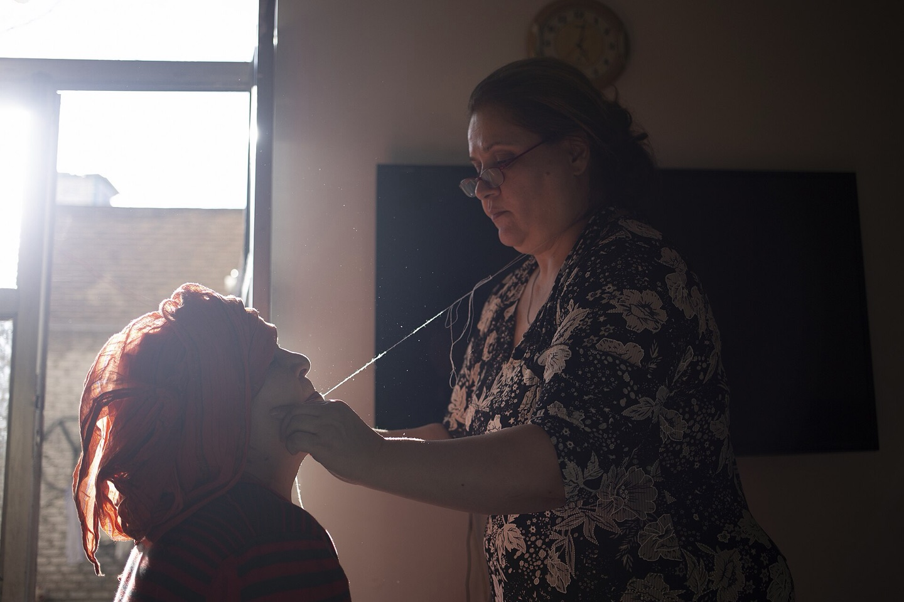
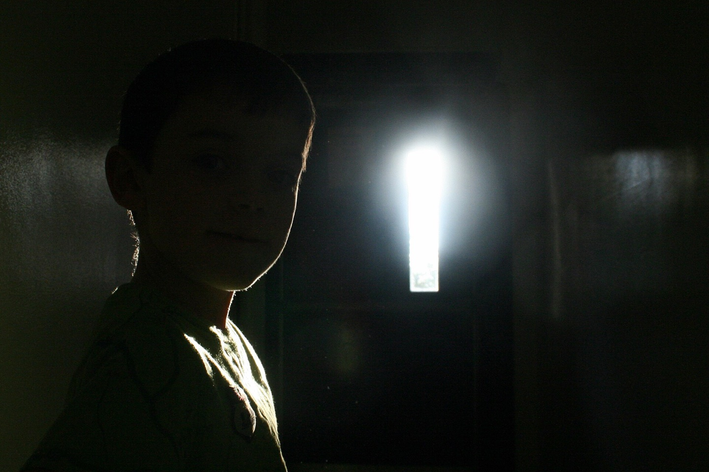

V4 · 只留这一锅让新记忆占满视野，操作退到画面边缘，把出锅的那一刻留长一点。STATIC STUDY / 1440 × 1000
记忆厨房慢慢
做饭
做饭

刚刚出锅 / 第 004 道
把午后
煮暖。
牵挂、甜，还有一束安静的光。
这一次，煮成了同一种想念。
记忆没有标准做法。THREE MEMORIES / ONE NEW AFTERNOON
这一锅的三味 · 3 / 5



窗边的午后
味道：牵挂
牵挂、甜，还有一束安静的光。
这一次，煮成了同一种想念。
记忆没有标准做法。THREE MEMORIES / ONE NEW AFTERNOON

